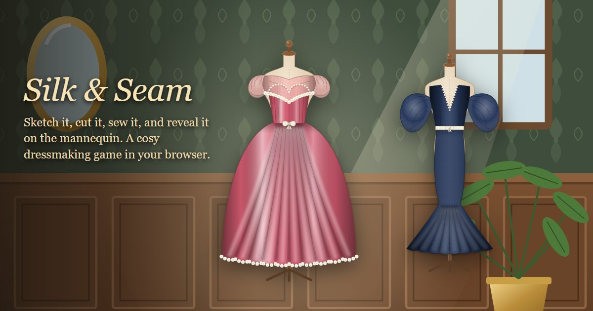

Silk & Seam — a free cosy dressmaking game in your browser
Take commissions from clients, make the dress they asked for from the first sketch to the last pearl, and reveal it on the mannequin. No download, no sign-up.
Play Silk & Seam in your browser →

From a commission to a gown
Every dress starts with a client and an occasion. You sketch it - the bodice, the collar, the sleeves and the skirt, the fabric and up to three dyes - then cut the pattern pieces, sew the seams on a vintage machine, and embellish it with lace, pearls, bows and ribbon. Then the curtains open, the dress is revealed on the mannequin, and the client tells you what she thinks of it.
Get paid for getting it right
A client who wanted something romantic for a garden party will not pay full price for a gothic corset, however well it is sewn. The fee depends on how closely the dress matches what was asked for and on how cleanly it was cut and stitched, and a dress that delights earns a tip on top.
Finer fabrics, grander gowns
What you earn buys better cloth: satin, velvet, silk, sequins and gold brocade, each with its own look on the form. Every commission earns experience, and levelling up unlocks new bodices, sleeves, skirts, dyes and trims, from a simple A-line day dress to a ball gown or a mermaid skirt.
No account, nothing to install
It runs in the browser tab you already have. There is no account to make, and your atelier is kept in your own browser so it is there when you come back. The site sets no cookies and keeps anonymous counts only.
More from the studio
For something slower still, Farmy Moon Life is a cosy life game on a tiny moon with an orchard and a cat landlord. For words, Farmy Crosswords holds five puzzles in one place, and the board games - Farmy Chess, Farmy Checkers and Farmy Ludo - have big pieces and no clock. Every game is listed on the home page, and the reviews page says what is good and what is not about each of them.